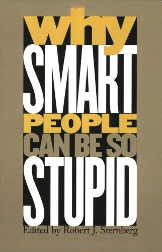

罗伯特·斯滕伯格（Robert J. Sternberg）是美国心理学界最具影响力的智力研究者之一，曾任耶鲁大学IBM心理学与教育学讲席教授，后历任俄克拉荷马州立大学、康奈尔大学等校教职，并曾担任美国心理学会主席。他以“成功智力”理论和“智力三元论”闻名，主张人类智力不能仅凭IQ或学术成绩衡量，而应涵盖分析能力、创造能力与实践能力三个维度。《为什么聪明人会做蠢事》出版于2002年，由耶鲁大学出版社出版，是斯滕伯格主编的一本跨学科论文集，汇集了多位认知心理学、社会心理学与智力研究领域的顶尖学者，共同探讨一个反直觉的核心问题：高智力与愚蠢行为之间，究竟是什么关系？
本书的出发点是对“智力即聪明”这一常识性假设的质疑。斯滕伯格在导论中开宗明义：愚蠢（stupidity）并不只是智力的缺失，它可能是一种独立存在的心理现象，在某些情境下甚至与高智力并行发生。书中各章由不同作者撰写，从多个维度逼近这一问题。雷·海曼（Ray Hyman）探讨“聪明人何时会变蠢”，分析系统性错误的认知根源；卡罗尔·德韦克（Carol Dweck）分析“让聪明人变蠢的信念”，指出固定型心态（fixed mindset）如何使高智力者在面对挑战时表现失常；理查德·瓦格纳（Richard Wagner）检视管理层失职的案例；大卫·珀金斯（David Perkins）则提出“愚蠢引擎”（the engine of folly）的概念，描述短视的激励机制与情境压力如何诱导理性人做出非理性选择。全书还讨论了智力与社会情商之间的张力，以及在高压情境下自我管控能力崩溃的机制。
斯滕伯格本人在书中提出了“智慧平衡理论”（Balance Theory of Wisdom）作为部分解答：真正的智慧要求个体在追求目标时，能够平衡自身利益、他人利益与更广泛的社会利益，并在不同情境下灵活应用不同的智力能力。他的核心观点是，高智力者之所以频繁做出愚蠢举动，往往是因为他们的聪明助长了一种特殊的自负——相信自己足够聪明，可以绕过规则、忽视反馈、甚至无视道德约束。这一“聪明人的傲慢”（the arrogance of intelligence）在历史上的政治家、企业家和学者群体中留下了无数触目惊心的案例。书中援引克林顿-莱温斯基事件、企业丑闻等真实事件加以分析，使抽象的理论论点具备了鲜活的现实质地。
对于有志于理性决策的读者而言，本书提供的不是心灵鸡汤式的告诫，而是一套有心理学研究支撑的分析框架，用以理解人类判断失灵的结构性成因。《选择》（Choice）杂志评价本书“精彩、充满智识的狡黠，且与当代文化高度切合”，并称其为“一次令人着迷的探索”。《今日心理学》则称本书是“对一种普遍现象的严肃尝试性理解”。无论是管理者、投资者还是普通决策者，凡是希望认识自身判断盲区、避免以聪明之名犯下愚蠢错误的人，都能从这本书中获得有价值的参照。